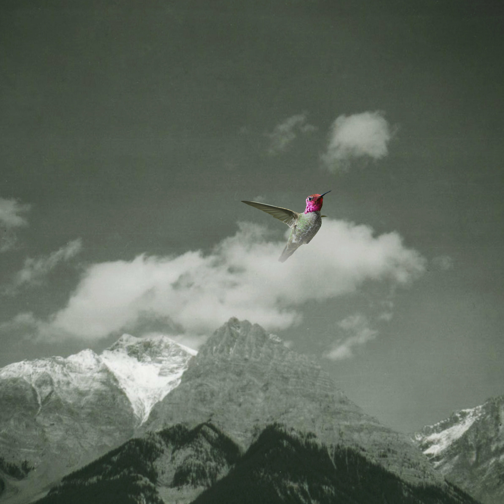

Bardo Pond - Melt Away



Información del álbum facilitada por discogs.com:
Fecha de lanzamiento: 2024
Géneros: Rock
Estilos: Psychedelic Rock, Stoner Rock
Pais: UK, Europe & US
Votos: Media de 4.67 con 3 votos
Sello: Matador
Recorded At: Studio Red (2)
Recorded At: Cycle Sounds
Recorded At: Lemur House
Copyright (c): Bardo Pond
Pressed By: GZ Media
Artwork - John Gibbons
Artwork - Michael Gibbons
Co-producer, Engineer - Jason Cox (2)
Photography By [Rear Photo] - Bert Queiroz
Recorded By - Michael Gibbons
Tracklist:
A1. Olive Skin
A2. Tapir Dub
A3. Son Of Dispersion
B1. Anadamide (Complete)
B2. Shadow Puppet
B3. The Division Of Nature
C1. The Trail
C2. Long Ride
D1. Despite The Roar (In Spite Of Themselves)
D2. Highlands